验收 · 第三页：空中螺旋（Aerial Screw）
第三个页签原来是一把锁，现在是一台完整的机器。下面的图和录屏都来自现在的 index.html（还没有提交，也没有发布）。带分界线的图可以左右拖动。
先看两段录屏
白色圆点是鼠标 / 手指的位置，只是录屏时加的标记，页面里没有。
电脑（56 秒）：画出来 → 拖分界线 → 推到纸边变成全实木 → 转动视角 → 滚轮把它转快，它离开影子升起来，底盘开始反着转 → 看“推杆”的批注 → 拉铜尺拆开 → 点镜子把反写字翻成英文 → 合上。
手机竖屏（46 秒）：从扑翼机点第三个页签翻页 → 拖滑块 → 快转摇柄让它升起来 → 看“亚麻布”的批注 → 拆开。
1. 打开第一眼
一根立轴，上面是绕了两圈的亚麻布螺旋面，下面是圆形木平台。螺旋面由三样东西组成：从立轴向外伸的芦苇杆（每 30 度一根）、沿杆尖绕一圈的铁丝边、铺在上面的布。轴顶拉下四根绳子，把铁丝边吊住。平台上四根斜撑扶住立轴，斜撑中间是给人推着走的十字推杆。螺旋下方那几圈淡墨线，是它转动时在空气里“拧出来的螺纹”，会跟着转、慢慢下沉。
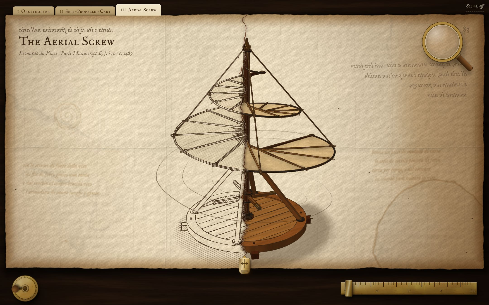
2. 墨线稿 ↔ 实木（同一个姿势，拖动对比）
布在墨线稿里是一层淡淡的斜线，会挡住后面的线（否则两圈螺旋的线全叠在一起，看不清）；在实木里是上过浆的亚麻布。
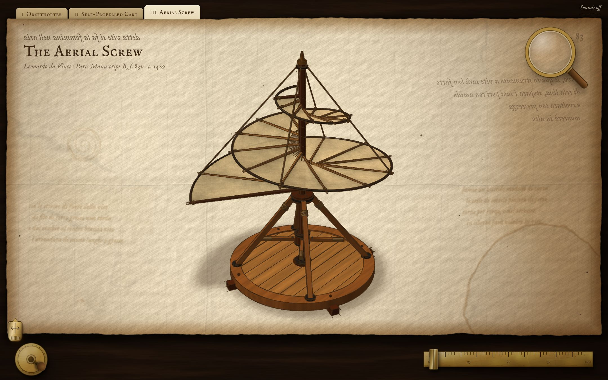
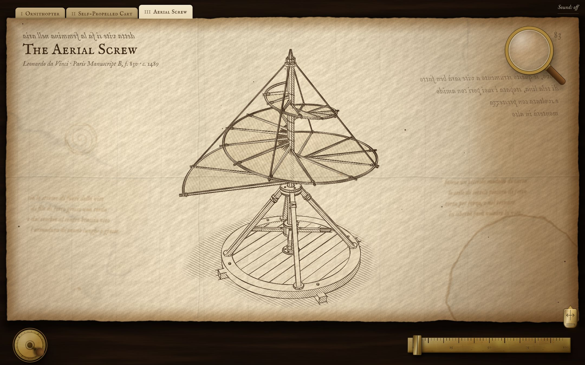
墨线实木3. 拆开（左：反写的意大利文；右：点镜子以后）
宽屏上的拆法：立轴留在中间，芦苇杆骨架、铁丝边、布这三层各自挪到立轴旁边，继续在原地转；四根绳子像帐篷一样升到上方；斜撑向四周散开，平台下沉。名字标在每一层的转轴上，所以零件转的时候名字不会跟着晃。
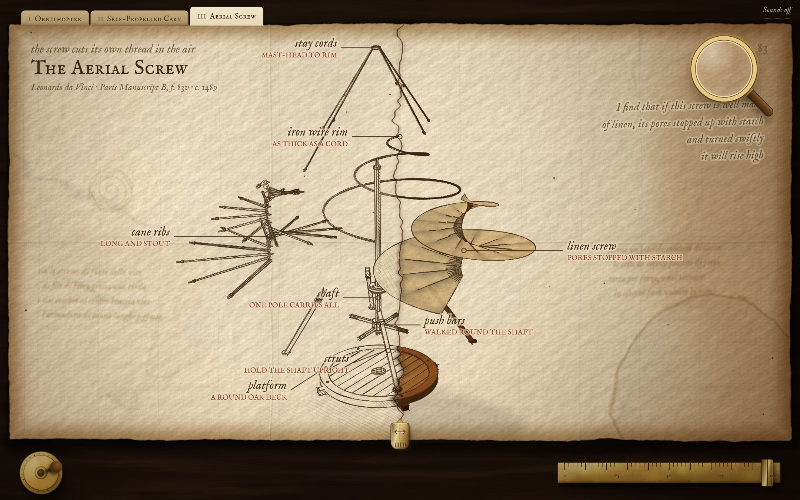
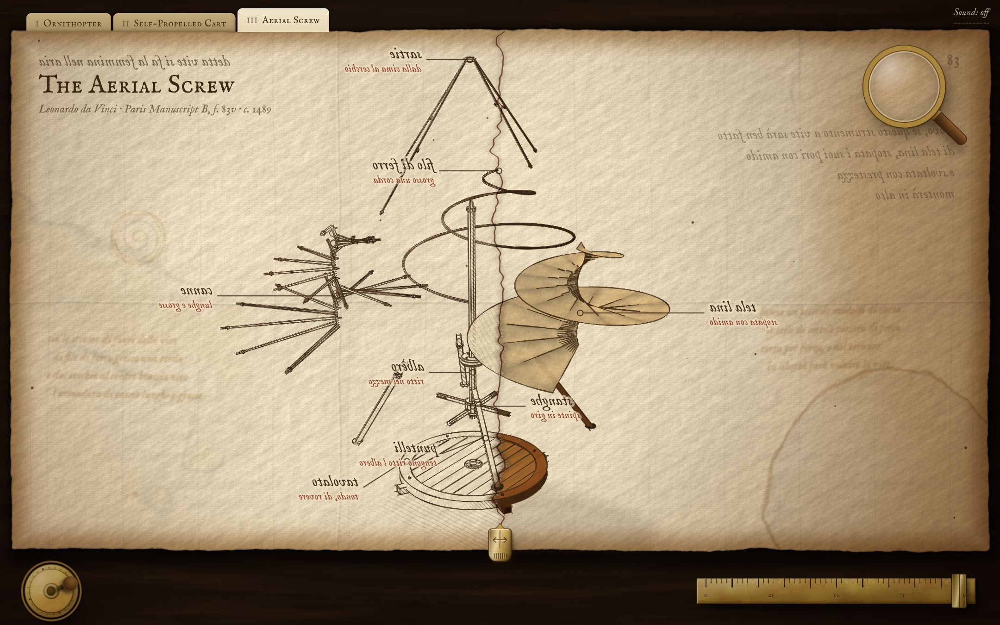
反写镜子翻转后4. 点零件看批注
这一条写的是这台机器最有名的毛病：人是踩着平台推杆子的，所以真飞起来的话，平台会朝反方向转。
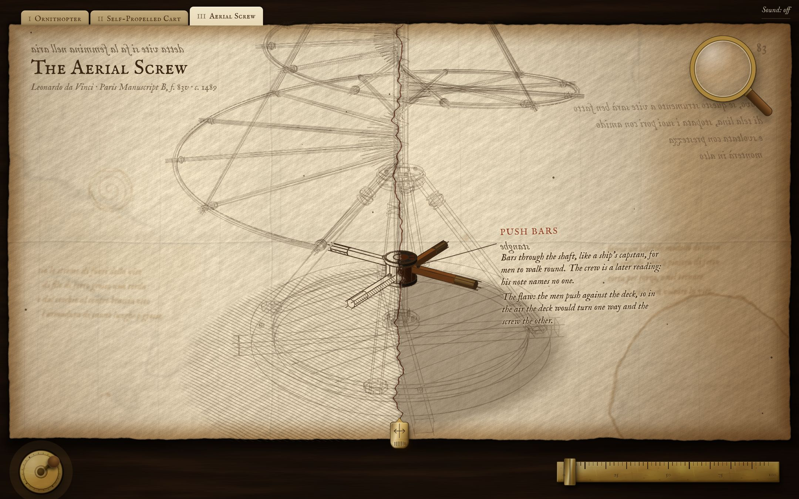
5. 转得很快的时候（左：正常速度；右：用滚轮或摇柄猛转之后）
这是我自己加的一个小彩蛋，对应他那句“转得够快就会升高”：超过正常速度以后，整台机器慢慢离开地上的影子，同时平台开始反着转（就是上一条批注说的毛病）。慢下来就落回去。不喜欢可以去掉。
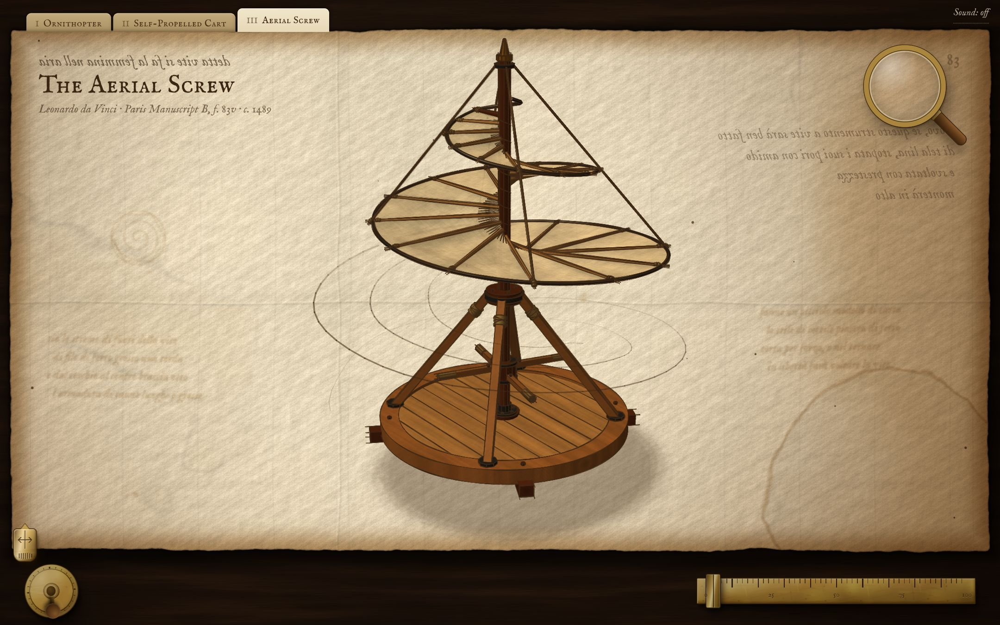
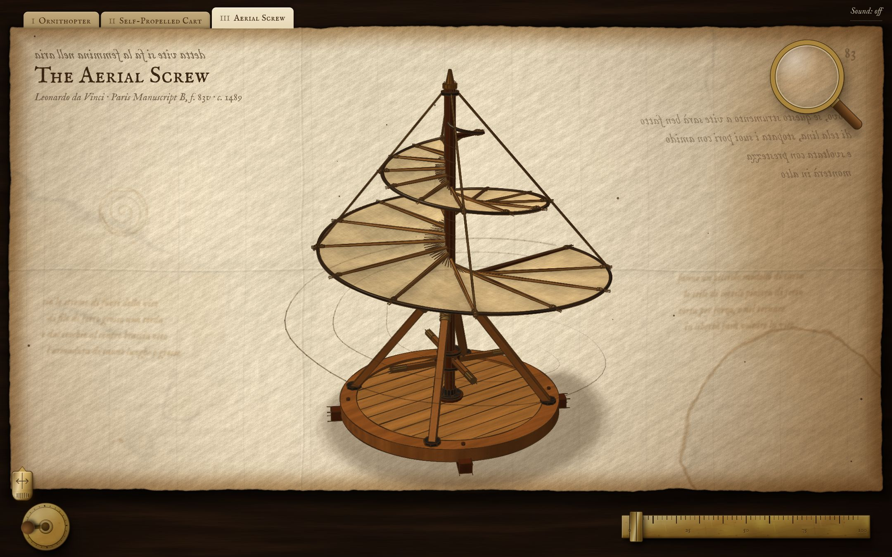
正常速度猛转之后6. 手机竖屏
竖屏拆开时换了一种拆法：纸又窄又高，所以芦苇杆留在立轴上，布、铁丝边、绳子依次向上提起，叠成一座塔，正好填满纸面。名字沿左右页边排开。
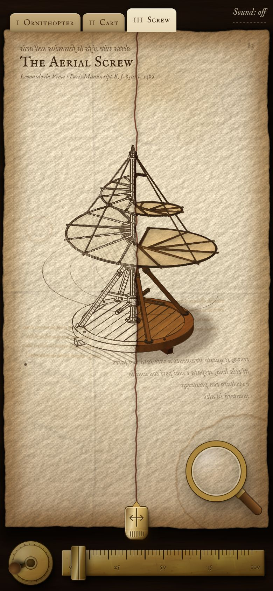
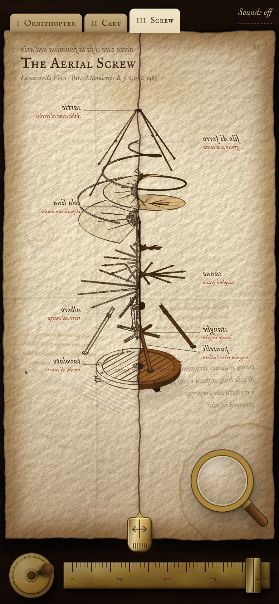
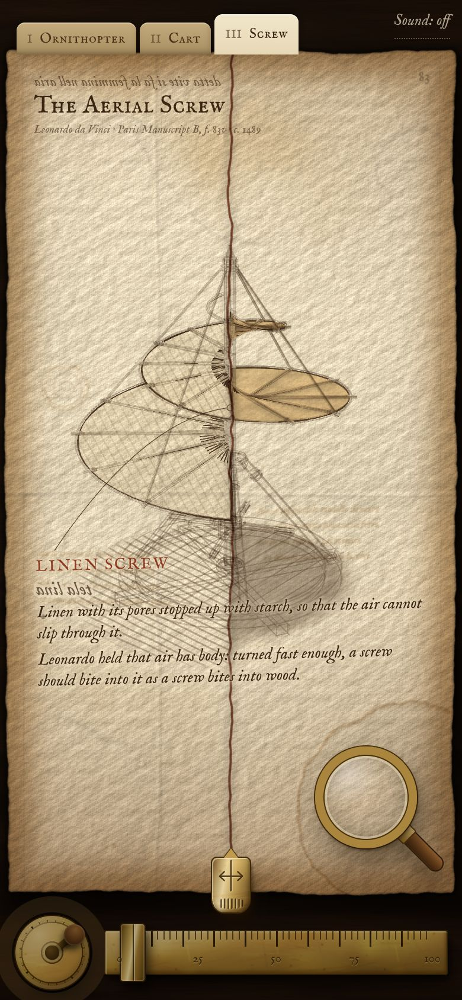
7. 手机横屏
这台机器又高又瘦，横屏的纸很矮。我给它加了一条“必须从头到脚都在纸里”的取景规则，只对这台机器生效。
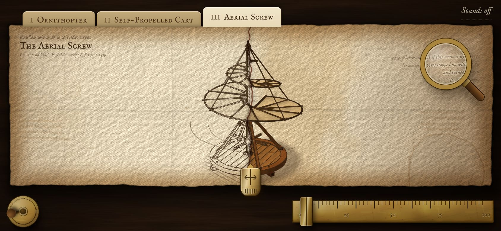
8. 前两页有没有被动到（拖动对比）
没有。第一页唯一的变化是右边那个页签：锁和“next?”去掉了，变成可以点的“III Aerial Screw”（手机上是“III Screw”）。我把页签以下的画面和改之前逐像素比过，扑翼机和自走车的差别都在烛光闪动的正常波动之内。
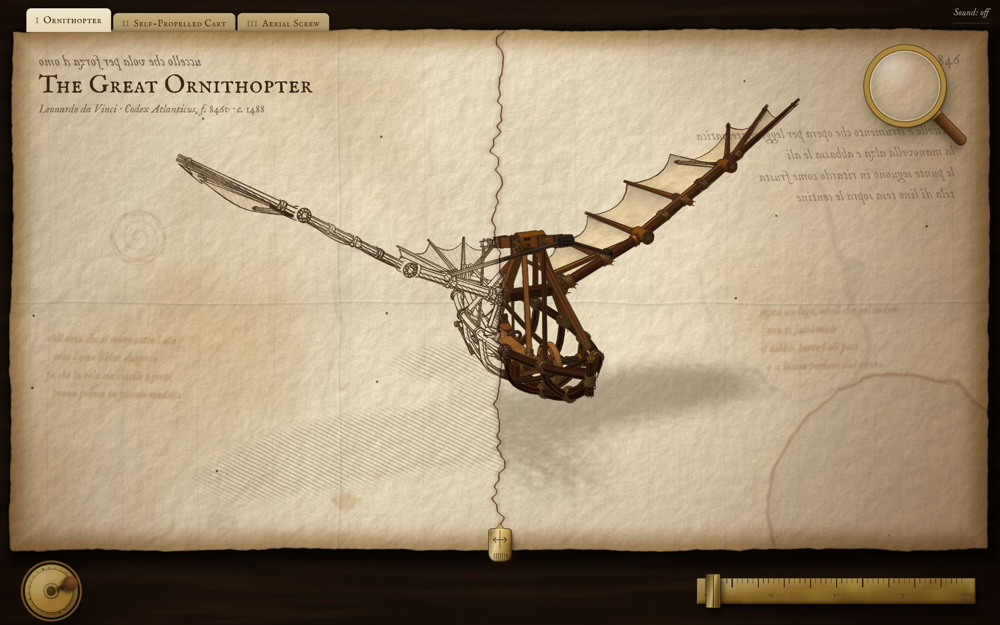
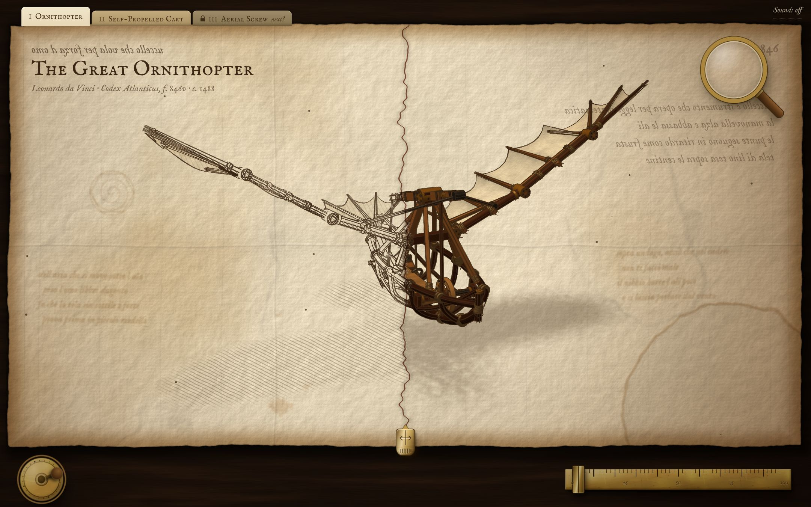
之前现在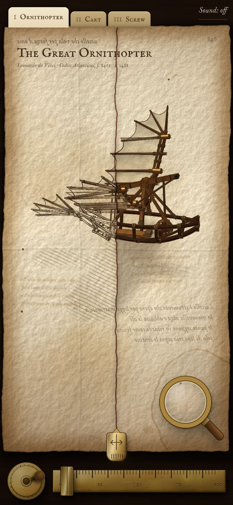
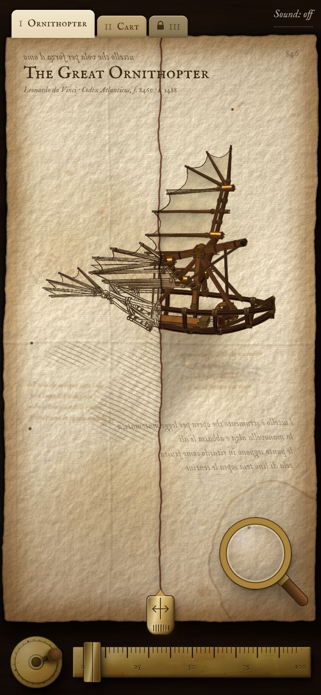
之前现在- 声音：螺旋每转一圈有一声布扫过空气的声音，每半圈有一声木头吱呀声。和其他声音一样，只确认了不报错，没有人听过。
- 文字：标题上方那句和右边四行反写字，是达芬奇在这一页上写的原话（出处是意大利语维基百科“Vite aerea”条目的引文，没有对照手稿原件）。纸背透过来的字、零件的意大利文名字是我凭记忆写的，没有核对。
- 平台、斜撑、推杆、四个人推着走，都是后人的复原方式；他的草图和笔记里没有画人，也没说靠什么驱动。批注里已经照实写了。
- 真手机和 Safari 仍然没有测过。